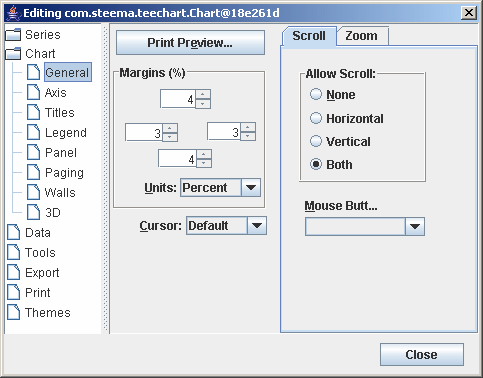
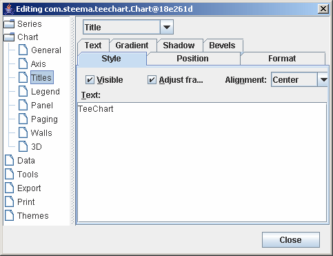
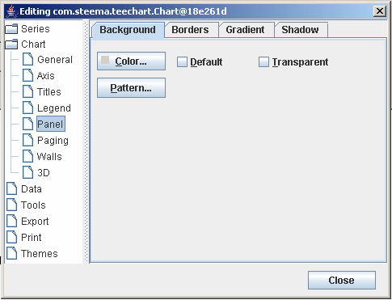
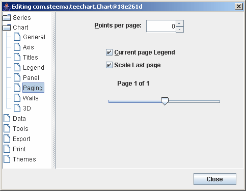
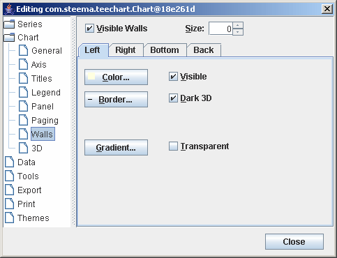
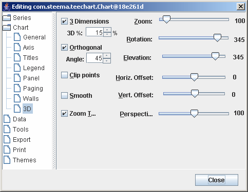

<html>
<head>
<title>Tutorial 2 - Chart display properties</title>
<link rel=Stylesheet type="text/css" media=all href=helpstyle.css></head>
<body TEXT="#000000" LINK="#0000ff" VLINK="#800080" BGCOLOR="#ffffff" topmargin=4>
<div class=Section1>
<div style='background-image:'url(timages/headerback.png)';left:0in;
position:absolute;top:0in;z-index:-10' id=one>

<p class=MsoNormal><span style='font-size:9.0pt;font-family:"Verdana","sans-serif";
mso-fareast-font-family:"Times New Roman"'>&nbsp; <o:p></o:p></span></p>

<table class=MsoNormalTable border=0 cellpadding=0 width="100%"
 style='width:100.0%;mso-cellspacing:1.5pt;mso-yfti-tbllook:1184'>
 <tr style='mso-yfti-irow:0;mso-yfti-firstrow:yes;mso-yfti-lastrow:yes'>
  <td style='padding:.75pt .75pt .75pt .75pt'>
  <p class=MsoNormal><span style='font-size:9.0pt;font-family:"Verdana","sans-serif";
  mso-fareast-font-family:"Times New Roman"'>&nbsp;<o:p></o:p></span></p>
  </td>
 </tr>
</table>

</div>

<table class=MsoNormalTable border=0 cellspacing=0 cellpadding=0 width="100%"
 style='width:100.0%;mso-cellspacing:0cm;mso-yfti-tbllook:1184;mso-padding-alt:
 0cm 0cm 0cm 0cm'>
 <tr style='mso-yfti-irow:0;mso-yfti-firstrow:yes;mso-yfti-lastrow:yes'>
  <td valign=top style='padding:0cm 0cm 0cm 0cm'>
  <p class=MsoNormal><span style='font-size:9.0pt;font-family:"Verdana","sans-serif";
  mso-fareast-font-family:"Times New Roman";mso-no-proof:yes'></span><span
  style='font-size:9.0pt;font-family:"Verdana","sans-serif";mso-fareast-font-family:
  "Times New Roman"'><o:p></o:p></span></p>
  </td>
  <td valign=top style='padding:0cm 0cm 0cm 0cm'>
  <p class=MsoNormal align=right style='text-align:right'><span
  style='font-size:10.0pt;font-family:"Verdana","sans-serif";mso-fareast-font-family:
  "Times New Roman"'>&nbsp; <a href="contents.htm">Contents&nbsp;page</a>&nbsp;<br>
  &nbsp;<a href="tutorial1.htm">Previous</a>&nbsp;|&nbsp;<a href="tutorial3.htm">Next</a>&nbsp;<o:p></o:p></span></p>
  </td>
  <td width=20 valign=top style='width:15.0pt;padding:0cm 0cm 0cm 0cm'>
  <p class=MsoNormal><span style='font-size:9.0pt;font-family:"Verdana","sans-serif";
  mso-fareast-font-family:"Times New Roman"'>&nbsp;<o:p></o:p></span></p>
  </td>
 </tr>
</table>

<h2><a name="TeeChart_tutorial_2"><span style='mso-fareast-font-family:"Times New Roman"'>Tutorial
2 - Chart display methods</span></a><span style='mso-fareast-font-family:"Times New Roman"'><o:p></o:p></span></h2>

<div class=MsoNormal align=center style='text-align:center'><span
style='font-size:9.0pt;font-family:"Verdana","sans-serif";mso-fareast-font-family:
"Times New Roman"'>

<hr size=2 width="100%" align=center>

</span></div>

<p class=MsoNormal><span style='font-size:9.0pt;font-family:"Verdana","sans-serif";
mso-fareast-font-family:"Times New Roman"'><o:p>&nbsp;</o:p></span></p>

<p>Chart display features are those which affect the overall appearance of the
Chart. They include those properties and methods that define the colour of the
Chart background, Titles and their position, margins, borders and bevels,
background images, frame and axis visible, pen colours and widths, 3D, walls,
etc.</p>

<p>All of these methods are available via code at design or runtime.</p>

<p>The overall Chart appearance characteristics are grouped into these
categories:</p>

<p><a href="#General"><span style='font-size:10.0pt'>General</span></a><br>
<a href="#Axis"><span style='font-size:10.0pt'>Axis</span></a><br>
<a href="#Title"><span style='font-size:10.0pt'>Titles</span></a><br>
<a href="#Legend"><span style='font-size:10.0pt'>Legend</span></a><br>
<a href="#Panel"><span style='font-size:10.0pt'>Panel</span></a><br>
<a href="#Paging"><span style='font-size:10.0pt'>Paging</span></a><br>
<a href="#Walls"><span style='font-size:10.0pt'>Walls</span></a><br>
<a href="#ThreeD"><span style='font-size:10.0pt'>3D</span></a></p>

<p>These are the groupings you will find if you open the Chart Editor at
runtime and browse the Chart pages. Other methods affect the 'look' of your
Chart. These include Series colours and mark characteristics, individual Axis
and Grid display methods and labelling. These will be dealt with in later
tutorials dedicated to the specific role of these features.</p>

<p class=MsoNormal><span style='font-size:9.0pt;font-family:"Verdana","sans-serif";
mso-fareast-font-family:"Times New Roman"'><o:p>&nbsp;</o:p></span></p>

<div class=MsoNormal align=center style='text-align:center'><span
style='font-size:9.0pt;font-family:"Verdana","sans-serif";mso-fareast-font-family:
"Times New Roman"'>

<hr size=2 width="100%" align=center>

</span></div>

<h3><span style='mso-fareast-font-family:"Times New Roman"'>Getting started
with Chart display methods<o:p></o:p></span></h3>

<p>Add a new Chart to a Form and you will see it displays in 3D with a grey
panel background, 2 walls (Bottom and Left), Frame (which defines the Frame of
the Chart's plottable area) and a default Chart Title Header
&quot;TeeChart&quot;.</p>

<p>Add a '<b>Edit Chart</b>' button to the Form as described in the <a
href="tutorial1.htm">previous tutorial</a>, run the project and click the
button to access the Chart Editor. The first page is the Series page, which is
empty of Series at the moment and which we'll look at in another tutorial.
Select the second Chart tab 'General' to access the General Chart methods page.</p>

<h4><a name=General></a><span style='mso-fareast-font-family:"Times New Roman"'>General
Chart methods<o:p></o:p></span></h4>

<p>General options include Print Preview and Chart Export (See later Tutorials
on Printing and Exporting Charts) plus the 3 following sections:</p>

<p><i>Margins(%)<br>
Zoom<br>
Scroll<o:p></o:p></i></p>

<p>See the <a href="tutorial8.htm">Zoom and Scroll tutorial</a> for more
information about scrolling.</p>

<p class=MsoNormal><span style='font-size:10.0pt;font-family:"Verdana","sans-serif";
mso-fareast-font-family:"Times New Roman"'>Series' Add method <b><o:p></o:p></b></span></p>

<p><b>Margins</b><br>
<br>
Margins are defined as the distance between the Chart Border and the Chart
Frame and are expressed as a percentage of the overall dimensions of the Chart
Panel.</p>

<p>Moving the spin boxes in the Chart Editor Margins box will show you at
design time the effect of changing each Margin.</p>

<p>Runtime methods are:</p>

<pre>tChart1.getPanel().setMarginBottom();</pre><pre>tChart1.getPanel().setMarginLeft();</pre><pre>tChart1.getPanel().setMarginRight();</pre><pre>tChart1.getPanel().setMarginTop();</pre><pre><o:p>&nbsp;</o:p></pre>

<p class=MsoNormal><span style='font-size:9.0pt;font-family:"Verdana","sans-serif";
mso-fareast-font-family:"Times New Roman";mso-no-proof:yes'></span><span
style='font-size:10.0pt;font-family:"Verdana","sans-serif";mso-fareast-font-family:
"Times New Roman"'><o:p></o:p></span></p>

<p>The example applied in the demo project uses an UpDown button:</p>

<pre>public void jSpinner1_stateChanged(ChangeEvent e) {</pre><pre>tChart1.getPanel().setMarginTop(((Integer)jSpinner1.getValue()).intValue());</pre><pre>}</pre>

<h4><a name=Axis></a><span style='mso-fareast-font-family:"Times New Roman"'>Axis
Methods<o:p></o:p></span></h4>

<p>Control of the axes is quite an involved area at its highest level of
intricacy and is dealt with in greater depth in a later tutorial dedicated to <a
href="tutorial4.htm">Axis Control</a>. Here we will cover the fundamentals of
Axis and Frame display.</p>

<p>The second Chart page holds the methods for defining axis and frame
characteristics.</p>

<p><span style='mso-no-proof:yes'></span></p>

<p>There are 5 axes in the Chart. Left, Top, Right, Bottom and Depth. The Chart
Frame displays as a surround to the Chart's plottable area and has no data
corresponding features (See BackWall). The Depth initialises by default as not
Visible. All other Axes are visible from the moment that a Series is added to
the Chart and associated with those Axes (Left and Bottom as default). Custom
Axes may be added/removed by using the + and - keys on the dialogue. For a
Custom Axis to be visible (as for any other Axis) a Series must be associated
with the Axis. See the <span style='background:yellow'><a
href="tutorial4.htm#AdditionalAxes">Axis tutorial</a></span> for more about
Custom axes.</p>

<p>The key methods to enable display of axes and frame are:</p>

<p><b>Visible </b><br>
This checkbox enables or disables display of all axes. If the Back wall Frame
is visible then the Chart surround is still visible when the axes are hidden.
The result will be the appearance of a larger Chart as no area is reserved for
the axis labels. The Visible method for each Axis (Scales tab) overrides the
visible characteristic for each Axis. If you select the Depth Axis in the List
then you will note that Depth Axis Scales::Visible is by default 'not visible'.</p>

<p>Runtime</p>

<pre>tChart1.getAxes().setVisible(true);</pre>

<p class=MsoNormal><b><span style='font-size:10.0pt;font-family:"Verdana","sans-serif";
mso-fareast-font-family:"Times New Roman"'><o:p>&nbsp;</o:p></span></b></p>

<p><b>Axis: Left, Right, Top, Bottom and Depth Visible</b><br>
Select the Axis that you wish to display or hide in the Listbox and toggle the
Visible checkbox on the Scales tab to control the display for that specific
axis.</p>

<p>Runtime</p>

<p>e.g.</p>

<pre>tChart1.getAxes().getLeft().setVisible(false);</pre>

<p class=MsoNormal><span style='font-size:9.0pt;font-family:"Verdana","sans-serif";
mso-fareast-font-family:"Times New Roman"'><o:p>&nbsp;</o:p></span></p>

<h4><a name=Title></a><span style='mso-fareast-font-family:"Times New Roman"'>Titles
Methods<o:p></o:p></span></h4>

<p>The Titles page of the Chart Editor controls the characteristics of the
Chart Titles, Header and Footer.</p>

<p><span style='mso-no-proof:yes'></span></p>

<p>Use the dropdown Combobox to select either Title, Foot, SubTitle or SubFoot.
Enter the required text in the Textbox. You may type multiline titles.</p>

<p>Runtime:</p>

<p>The Text method of TChartTitle is a TStrings component. You may add several
lines to the Header:</p>

<p>e.g.</p>

<pre>tChart1.getHeader().setLines(new String[] {&quot;Welcome to&quot;, &quot;TeeChart&quot;, &quot;for Java&quot;});</pre>

<p>You may then modify lines of text:</p>

<p>e.g.</p>

<pre>tChart1.getChart().getTitle().setText(&quot;Title revised&quot;);</pre>

<p class=MsoNormal><span style='font-size:10.0pt;font-family:"Verdana","sans-serif";
mso-fareast-font-family:"Times New Roman"'><o:p>&nbsp;</o:p></span></p>

<p><b>Style Alignment</b><br>
Alignment refers to the Header (or Footer) alignment with respect to the Chart
area NOT the overall Chart Panel. The Chart area is the plottable area of the
Chart plus the Axis Labels and Legend.</p>

<p>Runtime:</p>

<pre>tChart1.getChart().getTitle().setAlignment(StringAlignment.CENTER);</pre>

<p class=MsoNormal><b><span style='font-size:9.0pt;font-family:"Verdana","sans-serif";
mso-fareast-font-family:"Times New Roman"'><o:p>&nbsp;</o:p></span></b></p>

<p><b>Position</b><br>
Use Position to override the Header or Footer default position and set a custom
position (pixels relation to Chart Top, Left).</p>

<p>Runtime:</p>

<pre>tChart1.getChart().getTitle().setCustomPosition(true);</pre><pre>tChart1.getChart().getTitle().setTop(30);</pre>

<p class=MsoNormal><b><span style='font-size:9.0pt;font-family:"Verdana","sans-serif";
mso-fareast-font-family:"Times New Roman"'><o:p>&nbsp;</o:p></span></b></p>

<p><b>Format</b><br>
Contains the settings for the Header box, e.g. Frame, Background colour, etc.</p>

<p class=MsoNormal><span style='font-size:9.0pt;font-family:"Verdana","sans-serif";
mso-fareast-font-family:"Times New Roman"'><o:p>&nbsp;</o:p></span></p>

<p><i>E.g. Pattern</i><br>
Patterns refers to both the background of foreground pattern of the Title or
Footer box.</p>

<p style='margin-bottom:12.0pt'><span style='font-size:10.0pt;mso-no-proof:
yes'></span><span style='font-size:10.0pt'><o:p></o:p></span></p>

<p><span style='mso-no-proof:yes'></span><span style='font-size:10.0pt'><o:p></o:p></span></p>

<p>The default is Clear. The selected Pattern will sit behind the Text.</p>

<p>Runtime:</p>

<p>e.g.</p>

<pre>tChart1.getHeader().getBrush().setStyle(HatchStyle.FORWARDDIAGONAL);</pre>

<p class=MsoNormal><b><span style='font-size:9.0pt;font-family:"Verdana","sans-serif";
mso-fareast-font-family:"Times New Roman"'><o:p>&nbsp;</o:p></span></b></p>

<p><b>Text</b><br>
Contains the Title Text appearance formatting characteristics. </p>

<p><i>E.g. Font</i><br>
The Font button will grant access to the Font Dialog window which allows
selection of Windows Fonts and definition of style (italic, bold, etc.) and
colour.</p>

<p>Runtime:</p>

<pre>tChart1.getFooter().getFont().setName(&quot;Times New Roman&quot;);</pre><pre>tChart1.getFooter().getFont().setBold(true);</pre>

<p class=MsoNormal><i><span style='font-size:10.0pt;font-family:"Verdana","sans-serif";
mso-fareast-font-family:"Times New Roman"'><o:p>&nbsp;</o:p></span></i></p>

<p><i>Outline</i><br>
Outline refers to the Frame for the Header or Footer. By default it is set to
Visible off. The Outline options derive from TChartPen.</p>

<p class=MsoNormal><b><span style='font-size:10.0pt;font-family:"Verdana","sans-serif";
mso-fareast-font-family:"Times New Roman"'><o:p>&nbsp;</o:p></span></b></p>

<p><b>Gradient</b></p>

<p>Enable/disable a Background Gradient in the Title box.</p>

<p class=MsoNormal><span style='font-size:10.0pt;font-family:"Verdana","sans-serif";
mso-fareast-font-family:"Times New Roman"'><o:p>&nbsp;</o:p></span></p>

<h4><a name=Legend></a><span style='mso-fareast-font-family:"Times New Roman"'>Legend
Methods<o:p></o:p></span></h4>

<p><span style='font-size:
10.0pt'>Legend</span><span style='font-size:10.0pt'> contents are dealt
with in a later tutorial. In the Legend page of the Chart Editor you may define
appearance aspects of the Legend. Important initial steps are to know how to
control Legend alignment and visible methods, colour, font, frame, shadow,
etc..<o:p></o:p></span></p>

<p><span style='mso-no-proof:yes'></span></p>

<p><b>Style</b><br>
Toggle On/Off Legend display and set Legend display content characteristics
(inclusion of Checkboxes, etc).</p>

<p>Runtime:</p>

<p>Example using a Checkbox to control Legend display.</p>

<pre><span style='mso-spacerun:yes'>  </span>tChart1.getLegend().setVisible(jCheckBox2.isSelected());</pre>

<p><i>Dividing Lines</i><br>
Used to draw lines within the Legend box between the Legend entries. TChartPen
methods apply.</p>

<p>Runtime:</p>

<p>e.g.</p>

<pre>tChart1.getLegend().getDividingLines().setVisible(true);</pre><pre>tChart1.getLegend().getDividingLines().setColor(Color.Blue);</pre>

<p><b>Position</b><br>
Sets the default display position or enables custom positioning of the Legend.
TChart will change the shape of the Legend to fit the location. If the Legend
is set to the side (left or right) of the Chart the contents of the Legend, by
default, sit as a list from top to bottom. If the Legend sits below or above
the Chart then the Legend contents are placed side by side. The default
behaviour may be overridden by using the Resize Chart option and/or by using
Custom positioning. See the <a href="tutorial5.htm">Legend tutorial</a> for
more about custom positioning of the Legend.</p>

<p><i>E.g. ResizeChart</i><br>
Resize Chart defines whether or not the Chart will leave space for the Legend
when it paints. This allows the Legend to be placed within the Chart area.</p>

<p>Runtime:</p>

<p>e.g.</p>

<pre>tChart1.getLegend().setResizeChart(true);</pre>

<p class=MsoNormal><i><span style='font-size:9.0pt;font-family:"Verdana","sans-serif";
mso-fareast-font-family:"Times New Roman"'><o:p>&nbsp;</o:p></span></i></p>

<p><i>%Top position</i><br>
Defines the Legend box displacement from the top of the Chart Panel.</p>

<p>Runtime:</p>

<p>e.g.</p>

<pre>tChart1.getLegend().setTopLeftPos(20);</pre>

<p class=MsoNormal><span style='font-size:9.0pt;font-family:"Verdana","sans-serif";
mso-fareast-font-family:"Times New Roman"'><o:p>&nbsp;</o:p></span></p>

<p><b>Symbols</b><br>
Size and formatting of the Legend symbols.</p>

<p class=MsoNormal><i><span style='font-size:9.0pt;font-family:"Verdana","sans-serif";
mso-fareast-font-family:"Times New Roman"'><o:p>&nbsp;</o:p></span></i></p>

<p><i>%Color width</i><br>
Defines the width of the colour boxes within the Legend.</p>

<p>Runtime:</p>

<p>e.g.</p>

<pre>tChart1.getLegend().setColorWidth(40);</pre>

<p class=MsoNormal><span style='font-size:9.0pt;font-family:"Verdana","sans-serif";
mso-fareast-font-family:"Times New Roman"'><o:p>&nbsp;</o:p></span></p>

<p><b>Format</b><br>
Contains the settings for the Title box, e.g. Frame, Background colour, etc.</p>

<p class=MsoNormal><i><span style='font-size:9.0pt;font-family:"Verdana","sans-serif";
mso-fareast-font-family:"Times New Roman"'><o:p>&nbsp;</o:p></span></i></p>

<p><i>E.g. Shadow</i><br>
Methods for the display of the Legend box Shadow. You may define the colour and
size.</p>

<p>Runtime:</p>

<p>e.g.</p>

<pre>tChart1.getLegend().getShadow().setColor(Color.Yellow);</pre>

<p><b>Text</b><br>
Text characteristics for the Legend text contents.</p>

<p>Runtime</p>

<pre>tChart1.getLegend().setColor(Color.blue);</pre><pre>tChart1.getLegend().getFont().setName(&quot;Times New Roman&quot;);</pre><pre>tChart1.getLegend().getFont().setColor(Color.yellow);</pre>

<p><b>Gradient</b></p>

<p>Enable/disable a Background Gradient in the Legend box.</p>

<p class=MsoNormal><span style='font-size:9.0pt;font-family:"Verdana","sans-serif";
mso-fareast-font-family:"Times New Roman"'><o:p>&nbsp;</o:p></span></p>

<h4><a name=Panel></a><span style='mso-fareast-font-family:"Times New Roman"'>Panel
Methods<o:p></o:p></span></h4>

<p>The TeeChart Panel page allows you to set parameters which can greatly
enhance the appearance of the Chart. Panel Gradient effects are best seen by
monitors that support true colour but some colour combinations on 255 colour
screens are very acceptable.</p>

<p>By now you are familiar with TeeChart methods so we won't run through all of
them here. Panel methods may be accessed via the <span style='font-size:10.0pt;
font-family:"Courier New"'>TChart component.</span></p>

<p><span style='mso-no-proof:yes'></span></p>

<p>Key areas are:</p>

<p><b>Background</b><br>
<i>E.g. Panel Color</i><br>
Panel colour will paint the whole Chart background with the chosen colour. If
you select to view a background Gradient or BackImage they will hide the Panel
colour. If you set a Back colour it will replace the Panel colour within the
Chart Frame only.</p>

<p><i>E.g. BackImage</i><br>
You may select any bitmap (.bmp) file as BackImage. The BackImage may be
centred, tiled or stretched on the Chart Panel, or may be restricted to the
Chart Frame boundaries.</p>

<p>Runtime:</p>

<p>Use BackImage.LoadFromFile to add a BackImage to a Chart at runtime.</p>

<p>e.g.</p>

<pre><span style='mso-spacerun:yes'>  </span>if (jFileChooser1.accept(jFileChooser1.getSelectedFile()))</pre><pre>tChart1.getBackgroundImage().loadFromFile(jFileChooser1.getSelectedFile());</pre>

<p class=MsoNormal><b><span style='font-size:9.0pt;font-family:"Verdana","sans-serif";
mso-fareast-font-family:"Times New Roman"'><o:p>&nbsp;</o:p></span></b></p>

<p><b>Border</b><br>
You may define Border independently or in conjunction with the Bevel methods.
With Border set to Visible True you will obtain a 'sunken' border effect on the
outside of the Chart Panel. Mixing Bevel and Border and manipulating Width
gives almost any combination of 3D effects.</p>

<p><i>E.g. Bevel Inner/Bevel Outer/Width</i><br>
These methods will produce a variety of 3D effects on the Border of the Chart
panel. Modify them at design time to see how they affect the Chart border
bevels.</p>

<p class=MsoNormal><b><span style='font-size:9.0pt;font-family:"Verdana","sans-serif";
mso-fareast-font-family:"Times New Roman"'><o:p>&nbsp;</o:p></span></b></p>

<p><b>Gradient</b><br>
To define a Gradient you must select a StartColor and EndColor (plus,
optionally MidColor) and enable as Visible the Gradient. The Gradient will
cover the whole Chart panel. Gradient direction defines the direction of colour
change between Start, Mid and EndColor.</p>

<p>Runtime:</p>

<p>e.g.</p>

<pre>tChart1.getPanel().getGradient().setStartColor(Color.Teal);</pre><pre>tChart1.getPanel().getGradient().setEndColor(Color.SkyBlue);</pre><pre>tChart1.getPanel().getGradient().setDirection(LinearGradientMode.HORIZONTAL);</pre><pre>tChart1.getPanel().getGradient().setVisible(true);</pre>

<p class=MsoNormal><span style='font-size:10.0pt;font-family:"Verdana","sans-serif";
mso-fareast-font-family:"Times New Roman"'><o:p>&nbsp;</o:p></span></p>

<h4><a name=Paging></a><span style='mso-fareast-font-family:"Times New Roman"'>Paging
Methods<o:p></o:p></span></h4>

<p>TeeChart paging allows a Chart to be divided into a set number of points per
page and for the Chart to be leafed through. See the Paging tutorial for more
information.</p>

<p><span style='mso-no-proof:yes'></span></p>

<p class=MsoNormal><span style='font-size:9.0pt;font-family:"Verdana","sans-serif";
mso-fareast-font-family:"Times New Roman"'><o:p>&nbsp;</o:p></span></p>

<h4><a name=Walls></a><span style='mso-fareast-font-family:"Times New Roman"'>Walls
Methods<o:p></o:p></span></h4>

<p>There are 4 Walls: Left, Right, Bottom and Back, that may be represented in
2D or 3D. </p>

<p>Wall methods are accessible via:</p>

<pre>tChart1.getPanel().getGradient().setStartColor(Color.Teal);</pre><pre>tChart1.getPanel().getGradient().setEndColor(Color.SkyBlue);</pre><pre>tChart1.getPanel().getGradient().setDirection(LinearGradientMode.HORIZONTAL);</pre><pre>tChart1.getPanel().getGradient().setVisible(true);</pre>

<p><span style='mso-no-proof:yes'></span></p>

<p><b>Wall Border</b><br>
The Border button takes you to the Pen definition for the TChartWall component.
This is the same Pen as that available for many other TeeChart objects.</p>

<p><span style='mso-no-proof:yes'></span></p>

<p>The visible method enables/disables display of the Border. In the case of
the BackWall, where axes are Visible, the Wall Border will be hidden behind
those axes so you will only see the result of enabling/disabling the Border if
you hide some or all axes (e.g. Make axes Top and Right invisible to see the
result of toggling the Wall Border visible method e.g.
Chart1.BackWall.Pen.Visible := True;).</p>

<p>See <span style='font-size:
10.0pt'>Pen</span><span style='font-size:10.0pt'> for other characteristics
of the Border Pen. You can change these methods to see the result at design
time.<o:p></o:p></span></p>

<p class=MsoNormal><span style='font-size:9.0pt;font-family:"Verdana","sans-serif";
mso-fareast-font-family:"Times New Roman"'><o:p>&nbsp;</o:p></span></p>

<h4><a name=ThreeD></a><span style='mso-fareast-font-family:"Times New Roman"'>3D<o:p></o:p></span></h4>

<p>3D is extremely flexible in TeeChart Pro. You have the option to display the
Chart as:</p>

<table class=MsoNormalTable border=0 cellpadding=0 style='mso-cellspacing:1.5pt;
 mso-yfti-tbllook:1184'>
 <tr style='mso-yfti-irow:0;mso-yfti-firstrow:yes'>
  <td style='padding:.75pt .75pt .75pt .75pt'>
  <p class=MsoNormal><b><span style='font-size:9.0pt;font-family:"Verdana","sans-serif";
  mso-fareast-font-family:"Times New Roman"'>2D</span></b><span
  style='font-size:9.0pt;font-family:"Verdana","sans-serif";mso-fareast-font-family:
  "Times New Roman"'><o:p></o:p></span></p>
  </td>
  <td style='padding:.75pt .75pt .75pt .75pt'>
  <p class=MsoNormal><span style='font-size:9.0pt;font-family:"Verdana","sans-serif";
  mso-fareast-font-family:"Times New Roman"'>Flat Chart, viewed from front<o:p></o:p></span></p>
  </td>
 </tr>
 <tr style='mso-yfti-irow:1'>
  <td style='padding:.75pt .75pt .75pt .75pt'>
  <p class=MsoNormal><b><span style='font-size:9.0pt;font-family:"Verdana","sans-serif";
  mso-fareast-font-family:"Times New Roman"'>3D Orthogonal</span></b><span
  style='font-size:9.0pt;font-family:"Verdana","sans-serif";mso-fareast-font-family:
  "Times New Roman"'><o:p></o:p></span></p>
  </td>
  <td style='padding:.75pt .75pt .75pt .75pt'>
  <p class=MsoNormal><span style='font-size:9.0pt;font-family:"Verdana","sans-serif";
  mso-fareast-font-family:"Times New Roman"'>3D represented by vectored Lines
  to indicate depth<o:p></o:p></span></p>
  </td>
 </tr>
 <tr style='mso-yfti-irow:2;mso-yfti-lastrow:yes'>
  <td style='padding:.75pt .75pt .75pt .75pt'>
  <p class=MsoNormal><b><span style='font-size:9.0pt;font-family:"Verdana","sans-serif";
  mso-fareast-font-family:"Times New Roman"'>3D Native Windows</span></b><span
  style='font-size:9.0pt;font-family:"Verdana","sans-serif";mso-fareast-font-family:
  "Times New Roman"'><o:p></o:p></span></p>
  </td>
  <td style='padding:.75pt .75pt .75pt .75pt'>
  <p class=MsoNormal><span style='font-size:9.0pt;font-family:"Verdana","sans-serif";
  mso-fareast-font-family:"Times New Roman"'>3D using 3D Canvas with 360º Chart
  rotation<o:p></o:p></span></p>
  </td>
 </tr>
</table>

<p><span style='mso-no-proof:yes'></span></p>

<p><b>Editor options:<o:p></o:p></b></p>

<p><b>3 Dimensions</b><br>
Selecting this method (toggling) will change the Chart from a 3D to a 2D Chart
in design time and the setting will take effect for runtime.</p>

<p><b>3D %</b><br>
Controls the depth of the 3D effect. Changing the value of this method will
show you at design time the effect of changing the 3D percentage.</p>

<p>Runtime methods are:</p>

<p>3D visible</p>

<pre>tChart1.getGraphics3D().getAspect().setView3D(true);</pre>

<p>3D%</p>

<p>&nbsp;</p>

<pre>tChart1.getGraphics3D().getAspect().setChart3DPercent();</pre>

<p>The Orthogonal Option, when disabled, enables Windows Native 3D mode
allowing you to Rotate, Elevate and offset the Chart. The Zoom option allows
you to bring forward or move away the whole Chart. Zooming internally in the
Chart on Data Series is still available at runtime.</p>

<p class=MsoNormal><span style='font-size:10.0pt;font-family:"Verdana","sans-serif";
mso-fareast-font-family:"Times New Roman"'><o:p>&nbsp;</o:p></span></p>

<div class=MsoNormal align=center style='text-align:center'><span
style='font-size:10.0pt;font-family:"Verdana","sans-serif";mso-fareast-font-family:
"Times New Roman"'>

<hr size=2 width="100%" align=center>

</span></div>

<div align=center>

<table class=MsoNormalTable border=0 cellspacing=0 cellpadding=0 width=359
 style='width:269.25pt;mso-cellspacing:0cm;mso-yfti-tbllook:1184;mso-padding-alt:
 5.25pt 5.25pt 5.25pt 5.25pt'>
 <tr style='mso-yfti-irow:0;mso-yfti-firstrow:yes;mso-yfti-lastrow:yes'>
  <td width="42%" valign=top style='width:42.0%;background:white;padding:5.25pt 5.25pt 5.25pt 5.25pt'>
  <p><a href="tutorial1.htm"><span style='mso-no-proof:yes;text-decoration:
  none;text-underline:none'></span></a></p>
  </td>
  <td width="58%" valign=top style='width:58.0%;background:white;padding:5.25pt 5.25pt 5.25pt 5.25pt'>
  <p><a href="tutorial3.htm"><span style='mso-no-proof:yes;text-decoration:
  none;text-underline:none'></span></a></p>
  </td>
 </tr>
</table>

</div>

<div class=MsoNormal align=center style='text-align:center'><span
style='font-size:10.0pt;font-family:"Verdana","sans-serif";mso-fareast-font-family:
"Times New Roman"'>

<hr size=2 width="100%" align=center>

</span></div>

<p class=MsoNormal><span style='font-size:10.0pt;font-family:"Verdana","sans-serif";
mso-fareast-font-family:"Times New Roman"'>© 1996-2018 Steema Software SL. All
rights reserved. </span><span style='font-size:9.0pt;font-family:"Verdana","sans-serif";
mso-fareast-font-family:"Times New Roman"'><o:p></o:p></span></p>

</div>

</body>

</html>
